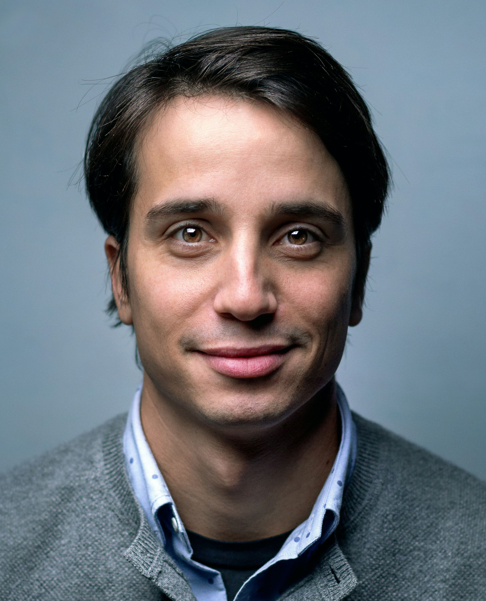

Urodziłem się w małej wsi w małopolskiej Toporzysku w 1981 roku. Chodziłem do szkoły w Toporzysku, a w szkole średniej byłem w Jordanowie. Pracuję w przedsiębiorstwie drzewnym. Po skończeniu szkoły zaczełem prace w przedsiembiorstwie drzewnym w Toporzysku. Mam żonę Natalię i dwójkę dzieci, Jana i Weronikę.